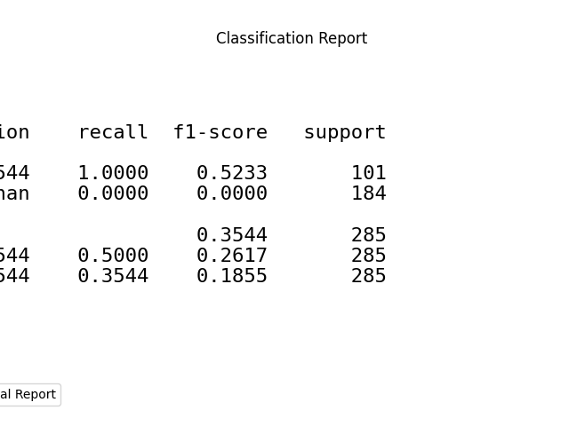
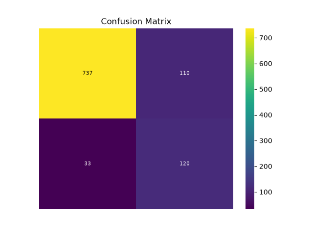
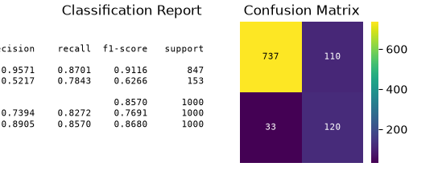
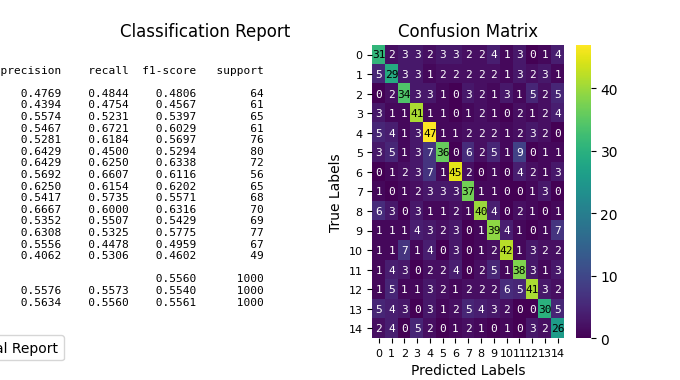
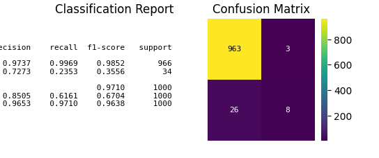

plot_evalplot_script with examples#
An example showing the evalplot function
with a scikit-learn classifier (e.g., LogisticRegression) instance.
# Authors: The scikit-plots developers
# SPDX-License-Identifier: BSD-3-Clause
Import scikit-plot
import scikitplot.seaborn as sp
import matplotlib.pyplot as plt
import numpy as np; np.random.seed(0) # reproducibility
import pandas as pd
from sklearn.datasets import make_classification
from sklearn.datasets import (
load_breast_cancer as data_2_classes,
load_iris as data_3_classes,
load_digits as data_10_classes,
)
from sklearn.linear_model import LogisticRegression
from sklearn.model_selection import train_test_split
def logistic_scale(scores):
"""Scale decision_function outputs to (0,1) using the logistic (sigmoid) function."""
scores = np.asarray(scores, dtype=float)
# Clip to avoid overflow for large |x| before exp
# scores = np.clip(scores, -500, 500)
return 1.0 / (1.0 + np.exp(-scores))
def minmax_scale(scores):
"""Linearly scale an array to [0,1]."""
scores = np.asarray(scores, dtype=float)
min_, max_ = np.min(scores), np.max(scores)
if np.isclose(min_, max_):
# Avoid divide-by-zero when all values identical
return np.zeros_like(scores)
return (scores - min_) / (max_ - min_)
Load the data X, y = data_3_classes(return_X_y=True, as_frame=False) X, y = data_2_classes(return_X_y=True, as_frame=False)
# Generate a sample dataset
X, y = make_classification(n_samples=5000, n_features=20, n_informative=15,
n_redundant=2, n_classes=2, n_repeated=0,
class_sep=1.5, flip_y=0.01, weights=[0.85, 0.15],
random_state=0)
X_train, X_val, y_train, y_val = train_test_split(
X, y, stratify=y, test_size=0.2, random_state=0
)
np.unique(y)
array([0, 1])
Create an instance of the LogisticRegression
model = (
LogisticRegression(
# max_iter=int(1e5),
# C=10,
# penalty='l1',
# solver='liblinear',
class_weight='balanced',
random_state=0
)
.fit(X_train, y_train)
)
# Perform predictions
y_val_prob = model.predict_proba(X_val)
# Create a DataFrame with predictions
df = pd.DataFrame({
"y_true": y_val==1, # target class (0,1,2)
"y_score": y_val_prob[:, 1], # target class (0,1,2)
# np.argmax
"y_pred": y_val_prob[:, 1] > 0.5, # target class (0,1,2)
# "y_true": np.random.normal(0.5, 0.1, 100).round(),
# "y_score": np.random.normal(0.5, 0.15, 100),
# "hue": np.random.normal(0.5, 0.4, 100).round(),
})
df
p = sp.evalplot(
df,
x="y_true",
y="y_pred",
# y="y_score",
# allow_probs=True, # if y_score provided
# threshold=0.5,
kind="all",
)

p = sp.evalplot(
df,
x="y_true",
y="y_pred",
kind="classification_report",
text_kws={'fontsize': 16},
)

p = sp.evalplot(
df,
x="y_true",
y="y_pred",
kind="confusion_matrix",
)

fig, ax = plt.subplots(figsize=(8, 6))
p = sp.evalplot(
df,
x="y_true",
# y="y_pred",
y="y_score",
allow_probs=True, # if y_score provided
threshold=0.5,
kind="all",
)

import numpy as np
import matplotlib.pyplot as plt
from sklearn.datasets import make_classification
from sklearn.datasets import (
load_breast_cancer as data_2_classes,
load_iris as data_3_classes,
load_digits as data_10_classes,
)
from sklearn.ensemble import RandomForestClassifier
from sklearn.model_selection import train_test_split
from sklearn.metrics import classification_report, confusion_matrix
Load the data X, y = data_3_classes(return_X_y=True, as_frame=False) X, y = data_2_classes(return_X_y=True, as_frame=False)
# Generate a sample dataset
X, y = make_classification(n_samples=5000, n_features=50, n_informative=45,
n_redundant=2, n_classes=3, n_repeated=0,
class_sep=1.5, flip_y=0.01, #weights=[0.97, 0.03],
random_state=0)
X_train, X_val, y_train, y_val = train_test_split(
X, y, stratify=y, test_size=0.2, random_state=0,
)
np.unique(y)
array([0, 1, 2])
Initialize the Random Forest Classifier
rf_model = RandomForestClassifier(
class_weight='balanced',
n_estimators=100,
max_depth=6,
random_state=0,
)
# Train the model
rf_model.fit(X_train, y_train)
Make predictions on the test set
y_val_pred = rf_model.predict(X_val)
y_val_prob = rf_model.predict_proba(X_val)[:, 1]
fig, ax = plt.subplots(figsize=(8, 8))
p = sp.evalplot(
x=y_val,
y=y_val_pred,
kind="all",
)

fig, ax = plt.subplots(figsize=(8, 8))
p = sp.evalplot(
x=y_val==1,
# y=y_pred,
y=y_val_prob,
allow_probs=True, # if y_score provided
threshold=0.5,
kind="all",
)

Generate a classification report
print(classification_report(y_val, y_val_pred))
# Generate a confusion matrix
conf_matrix = confusion_matrix(y_val, y_val_pred)
print(conf_matrix)
precision recall f1-score support
0 0.89 0.86 0.87 334
1 0.87 0.89 0.88 333
2 0.86 0.86 0.86 333
accuracy 0.87 1000
macro avg 0.87 0.87 0.87 1000
weighted avg 0.87 0.87 0.87 1000
[[288 21 25]
[ 14 296 23]
[ 23 22 288]]
import seaborn as sns
# plt.figure(figsize=(12, 7))
# sns.heatmap(conf_matrix, annot=True, fmt='d', cmap='Blues',
# xticklabels=np.arange(15), yticklabels=np.arange(15))
# plt.ylabel('Actual')
# plt.xlabel('Predicted')
# plt.title('Confusion Matrix')
# plt.show()
Total running time of the script: (0 minutes 2.045 seconds)
Related examples